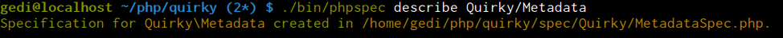
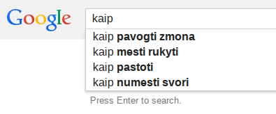
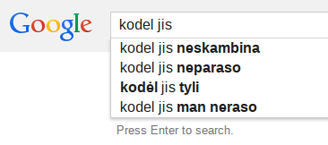
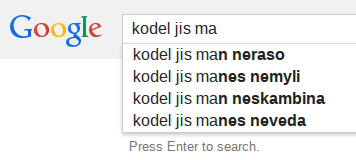
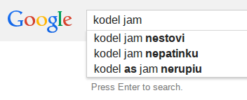
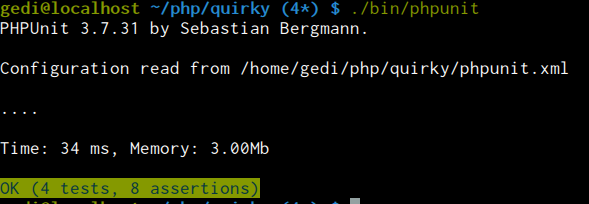

Who's talking?
Gediminas Morkevičius aka @l3pp4rd

- I code with - PHP, Go, JavaScript, C
- And I'm hardcore - ViM, Arch Linux, DWM user
- I share my stuff atgithub.com/l3pp4rd

Testing by example
In other words - I wanted to share some practical cases on how I approach TDD in projects I work with.
My point is
Whomever higher in the hierarchy:
We want this feature done ASP!
Yeah right.. doesn't it sound like?
OR
First thing, lets do this, we will write tests later..
Yeah right.. we know how it ends, don't we?
So the lesson here is:
Why? Because you cannot refactor that:
Lets estimate how long it will take to add new feature to legacy app:
3 packs of..
2 more employees.. because I'm writing
Where to start?
- Define features - BDD Behat
- Make a proof of concept for components - design the behavior
- Unit test the components of feature - Phpunit phpspec
- Loop around until it is solid and most important - until you are proud of it
Well, and write the actual code at some point.
Example
Given: we do not like Doctrine ORM, the complexity and limitations to database.
I want something light, mainly to map query results to an object.
Lets design the behavior in README
<?php
$sql = "SELECT * FROM users WHERE u.username = ?";
if ($data = $db->fetchAssoc($sql, ["tom"])) {
$user = new User;
$mapper->scan($data, $user);
}Something more sophisticated
<?php
$sql = <<<SQL
SELECT %s, %s FROM users AS u
INNER JOIN address AS a ON u.home_address_id = a.id
WHERE u.username = ?
SQL;
$sql = sprintf(
$sql,
$scanner->select('Model\User', 'u'),
$scanner->select('Model\Address', 'a')
);
if ($data = $db->fetchAssoc($sql, ["tom"])) {
$user = new User;
$user->homeAddress = new Address;
$scanner->scan($data, $user, 'u');
$scanner->scan($data, $user->homeAddress, 'a');
}Models
Our models should have some mapping
<?php
class User
{
/** @Column(type="integer") */
private $id;
/** @Column(type="string", name="first_name") */
private $firstName;
/** @Column(type="string") */
private $username;
private $unmapped;
}Write some specs
When we are happy with our initial behavior design.
We start writing specs, lets name our pet project - Quirky
Note: we should concentrate on our behavior design, not on details which are just details, I will try to denote this with examples.

<?php
namespace spec\Quirky;
use PhpSpec\ObjectBehavior;
use Prophecy\Argument;
class MapperSpec extends ObjectBehavior
{
function it_is_initializable()
{
$this->shouldHaveType('Quirky\Mapper');
}
}We need to be able to get selectable columns from a model object..
<?php // spec/Quirky/MapperSpec.php;
function it_should_be_able_to_generate_selectable_columns()
{
$expected = 'id, first_name, username';
$this->select('spec\Quirky\User')->shouldBe($expected);
$expected = 'u.id AS u_id, u.first_name AS u_first_name, u.username AS u_username';
$this->select('spec\Quirky\User', 'u')->shouldBe($expected);
}We should be able to get column types for a model object..
<?php // spec/Quirky/MapperSpec.php;
function it_should_be_able_to_list_types_of_columns()
{
$this->types('spec\Quirky\User')->shouldBe([
'id' => 'integer',
'first_name' => 'string',
'username' => 'string'
]);
$this->type('spec\Quirky\User', 'id')->shouldBe('integer');
$this->type('spec\Quirky\User', 'username')->shouldBe('string');
}We should be able to read column data from model..
<?php // spec/Quirky/MapperSpec.php;
function it_should_be_able_to_read_data_from_model()
{
$user = new User;
$this->data($user)->shouldBe([
'id' => 5,
'first_name' => 'Tom',
'username' => 'tom',
]);
}We should be able to scan data into model object..
<?php // spec/Quirky/MapperSpec.php;
function it_should_be_able_to_scan_data()
{
$user = new User;
$data = [
'username' => 'tom',
'first_name' => 'Tom',
'id' => 4,
];
$this->scan($data, $user);
}And here are some kittens so you won't fall a sleep
We will mock metadata so we can concentrate on behavior
<?php
namespace spec\Quirky;
use PhpSpec\ObjectBehavior;
use Prophecy\Argument;
class MapperSpec extends ObjectBehavior
{
private $userMapping = [
'id' => ['id', 'integer'],
'firstName' => ['first_name', 'string'],
'username' => ['username', 'string'],
];
/**
* @param Quirky\Metadata $metadata
*/
function let($metadata)
{
$metadata
->mapping('spec\Quirky\User')
->shouldBeCalled()
->willReturn($this->userMapping);
$this->beConstructedWith($metadata);
}
}Now lets update read data function, so it makes more sense..
<?php // spec/Quirky/MapperSpec.php;
function it_should_be_able_to_read_data_from_model($metadata)
{
$user = new User;
$metadata
->get($user, 'id')
->shouldBeCalled()
->willReturn(5);
$metadata
->get($user, 'firstName')
->shouldBeCalled()
->willReturn('Tom');
$metadata
->get($user, 'username')
->shouldBeCalled()
->willReturn('tom');
$this->data($user)->shouldBe([
'id' => 5,
'first_name' => 'Tom',
'username' => 'tom',
]);
}And finally, scanning spec
<?php // spec/Quirky/MapperSpec.php;
function it_should_be_able_to_scan_data($metadata)
{
$user = new User;
$data = [
'username' => 'tom',
'first_name' => 'Tom',
'id' => 4,
];
$metadata
->set($user, 'id', 4)
->shouldBeCalled();
$metadata
->set($user, 'firstName', 'Tom')
->shouldBeCalled();
$metadata
->set($user, 'username', 'tom')
->shouldBeCalled();
$this->scan($data, $user);
}And lets add our User class in the same spec
<?php
namespace spec\Quirky;
use PhpSpec\ObjectBehavior;
use Prophecy\Argument;
class MapperSpec extends ObjectBehavior
{
//...
}
class User
{
public $id;
private $firstName;
protected $username;
public $unmapped;
}Note: we do not have any implementation of metadata yet, it is a detail.
Lets describe our Metadata, so we can use it as a mock
Finally, write some code and see if we are missing something.
After coding, we do specs again and cover missing parts, to satisfy our design. And the last step, is annotation mapping support and such.
Some unrelated concerning questions in Lithuania, while compressing my video
   Lets see how it looks with PhpUnit
<?php
namespace Quirky;
class MapperTest extends \PHPUnit_Framework_TestCase
{
private $metadata;
private $mapper;
private $userMapping = [
'id' => ['id', 'integer'],
'firstName' => ['first_name', 'string'],
'username' => ['username', 'string'],
];
function setUp()
{
$this->metadata = $this
->getMockBuilder('Quirky\Metadata')
->disableOriginalConstructor()
->getMock();
$this->metadata
->expects($this->any())
->method('mapping')
->with('Quirky\User')
->will($this->returnValue($this->userMapping));
$this->mapper = new Mapper($this->metadata);
}
}Select column string test
<?php
/**
* @test
*/
function it_should_be_able_to_generate_selectable_columns()
{
$expected = 'id, first_name, username';
$this->assertSame($expected, $this->mapper->select('Quirky\User'));
$expected = 'u.id AS u_id, u.first_name AS u_first_name, u.username AS u_username';
$this->assertSame($expected, $this->mapper->select('Quirky\User', 'u'));
}Get types of columns test
<?php
/**
* @test
*/
function it_should_be_able_to_list_types_of_columns()
{
$this->assertSame($this->mapper->types('Quirky\User'), [
'id' => 'integer',
'first_name' => 'string',
'username' => 'string'
]);
$this->assertSame('integer', $this->mapper->type('Quirky\User', 'id'));
$this->assertSame('string', $this->mapper->type('Quirky\User', 'username'));
}And it starts to get ugly.. read data test
<?php
/**
* @test
*/
function it_should_be_able_to_read_data_from_model()
{
$user = new User;
$this->metadata
->expects($this->exactly(3))
->method('get')
->with($user, $this->logicalOr(
$this->equalTo('id'),
$this->equalTo('firstName'),
$this->equalTo('username')
))
->will($this->returnCallback(function($user, $field) {
$data = ['id' => 5, 'firstName' => 'Tom', 'username' => 'tom'];
return $data[$field];
}));
$this->assertSame([
'id' => 5,
'first_name' => 'Tom',
'username' => 'tom',
], $this->mapper->data($user));
}Who would understand this?
<?php
/**
* @test
*/
function it_should_be_able_to_scan_data()
{
$user = new User;
$data = [
'username' => 'tom',
'first_name' => 'Tom',
'id' => 4,
];
$this->metadata
->expects($this->exactly(3))
->method('set')
->with($user, $this->logicalOr(
$this->equalTo('id'),
$this->equalTo('firstName'),
$this->equalTo('username')
), $this->logicalOr(
$this->equalTo(4),
$this->equalTo('Tom'),
$this->equalTo('tom')
));
$this->mapper->scan($data, $user);
}But isn't it a..
Unfortunately.. Sabastian Bergmann does not think so..
And our best friend..

Might be not so friendly when..
Feature: User registration
Bla bla
As an user
I need to register
Scenario: Register
Given I visit "/account-area/registration/step/1"
When I sleep for 3 seconds
Then I should see "Fill the registration form" in the "h2" element
When I set "value" attribute to "john@doe.com" for input with id "email"
And I press "Register"
And I sleep for 4 seconds
Then I should see "You have created an account!"Because at least it should be..
Feature: User registration
In order to buy goods
As an anonymous user
I need to be able to signup
Scenario: Register an account
Given I am on homepage
When I follow Signup link
Then I should see "Fill the registration form" on page headline
When I fill in "Email" with "john@doe.com"
And I press "Register"
Then I should see notification "Shortly, you will receive an email to confirm your account!"
And there should be a confirmation email sent to "john@doe.com"And even better..
Feature: User registration
In order to buy goods
As an anonymous user
I need to be able to signup
Scenario: Register an account
Given I visit "Signup" page
When I fill in "Email" with "john@doe.com"
And I press "Register"
Then I should see notification "Shortly, you will receive an email to confirm your account!"
And there should be a confirmation email sent to "john@doe.com"Thank you

Slides are available at: slides.gediminasm.org
Code and demo slides.gediminasm.org/testing-by-example/files/quirky.tar.gz
Powered by: Revealjs